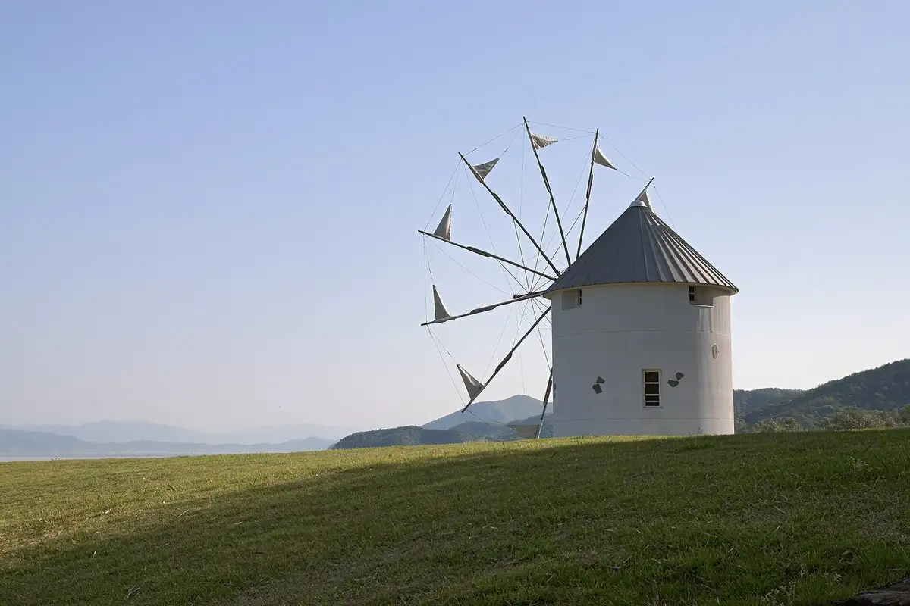
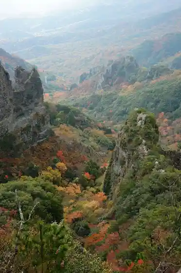
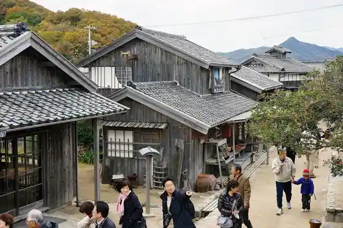
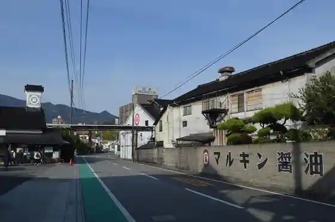
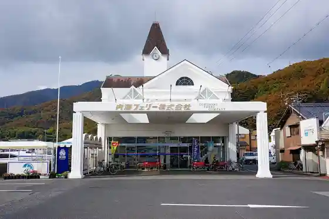

Shodoshima
Shodoshima · Kagawa
Shodoshima
Highlighted on the Kagawa map.

Stay
Inaka no Geihinkan Misaki
Kokuminshukusha Shodoshima
Bei Resort Hotel Shodoshima
Oribekkusu Uchi no Mi
Ponta no Yado
Hoshi no Sora
Shiitaigaai Land In Shodoshima
Shodoshima Santo no Sato
Otomari Chuzaemon Yoshino
Shima Yado Mari
Kaion Mari
Akua Hotel Shodoshima Resort
Moriguchi Ya Atosukuea
Seto no Hama beach&resort
O Yashiki Sutei Sachi
edit x seven Setochi Shodoshima
Dining
Inoe Makoto Ko Sono Farm Zuteburu Chuzaemon
cultiva
Kihara Shokudo
Oriibuparesu Resutorea
Sambashi Shokudo
Matsu Tei
Mazazu
MENTETSU Chuzaemon
San Oriibu
Gabacho
Komame Shokudo
Dai Chan
Kaisen Izakaya Masu Maru
Sosaku Kyodoryori Koyomi Koyomi
edén Setochi Shodoshima
Heiwa Do Main Shop
Onsen
Kokuminshukusha Shodoshima Public Bath
Bei Resort Hotel Shodoshima Shodoshima Onsen
Shiitaigaai Land In Shodoshima Kashikiri Furo
Shodoshima Santo no Sato Kashikiri Furo
Shima Yado Mari Rie Onsen
Kaion Mari Mari Raku Yu
O Yashiki Sutei Sachi Han Rotemburo
edit x seven Setochi Shodoshima Samarusupa
Experience
Kanka Kei Ropuei
Sights
Roadside Station Shodoshima Oriibu Park
Kanka Kei

Nijushi no Hitomi Eiga Village

Marukin Shoyu Memorial Museum

Kusakabe Minato

Fukuda Minato